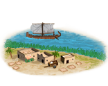
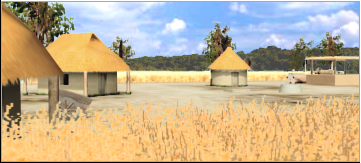

RTR: Imperium Surrectum
RTR: Imperium SurrectumSmall Papyrus Plantation (Rural) chain
4 levels, each replacing the one before it — you upgrade in place rather than building alongside.
Small Papyrus Plantation (Rural) → Papyrus Maker (Rural) → Papyrus Press (Rural) → Papyrus Supply (Rural)
Pictures are the game's own building art. Where a culture ships none of its own, the game falls back to another culture's, and that is what is shown here.
Levels at a glance
| Level | Cost | Build time | Minimum settlement | Upgrades to | Level | Cost | Build time | Minimum settlement | Upgrades to | ||
|---|---|---|---|---|---|---|---|---|---|---|---|
| Small Papyrus Plantation (Rural) | 1,500 | 2 | town | Papyrus Maker (Rural) | Papyrus Maker (Rural) | 2,500 | 3 | large town | Papyrus Press (Rural) | ||
| Papyrus Press (Rural) | 4,000 | 5 | city | Papyrus Supply (Rural) |  | Papyrus Supply (Rural) | 15,000 | 10 | large city | — |
Costs in denarii, build time in turns.
Small Papyrus Plantation (Rural)

A modest papyrus maker, supplying essential writing material for local needs.
The pen is mightier than the sword... but only if you have something to write on.
This small papyrus workshop provides the material needed for writing and record-keeping.
While not as glamorous as statues or temples, papyrus ensures that the deeds of rulers and the wealth of cities are recorded for future generations, or until someone loses the scrolls (or burns it to the ground like in Alexandria).
A humble place, yet essential for writing all those complaints and declarations.
| Cost | 1,500 denarii | Build time | 2 turns | Minimum settlement | town | Upgrades to | Papyrus Maker (Rural) |
What it does
- +1 trade income
Papyrus Supply (Rural)

Papyrus is being exported on a large scale, supporting the spread of knowledge and governance across the region.
The gift of papyrus is the gift of civilization itself.
Your papyrus are now being exported far and wide, its uses for education and burocracy give a law bonus in all your regions, supporting the writing needs of cities, libraries, and courts across the known world.
In every scroll, there’s a bit of your empire, and with every shipment, wealth flows back to the homeland. Paper may be light, but its impact is heavy, and with this, we are shipping the seeds of knowledge far and wide, one scroll at a time.
| Cost | 15,000 denarii | Build time | 10 turns | Minimum settlement | large city |
What it does
- +3 trade income
- +2 public order (law)
Papyrus Maker (Rural)

A significant papyrus maker, supplying vital materials for the growing bureaucratic demands of the region.
Words may fade, but papyrus makes sure they stick around a little longer.
This larger papyrus workshop produces more of this essential material, feeding the growing demand for written records, trade contracts, and maybe the odd love letter.
With so much papyrus flowing, knowledge, and bureaucracy, spread faster than ever, supplying enough material to keep bureaucrats busy and poets romantic.
| Cost | 2,500 denarii | Build time | 3 turns | Minimum settlement | large town | Upgrades to | Papyrus Press (Rural) |
What it does
- +1 trade income
- +1 public order (law)
Papyrus Press (Rural)

A massive papyrus operation, ensuring the flow of knowledge and paperwork across the region.
Scrolls, scrolls everywhere, there’s no such thing as too much bureaucracy!
This vast papyrus production site is thriving, and with it, the world’s thirst for knowledge and governance.
Bureaucrats, poets, and merchants alike rely on your papyrus, ensuring that laws are written, poetry is sung, and taxes are recorded.
Civilization marches forward on rolls of papyrus! Surely, this is where papyrus flows like wine, and scrolls multiply faster than rabbits.
| Cost | 4,000 denarii | Build time | 5 turns | Minimum settlement | city | Upgrades to | Papyrus Supply (Rural) |
What it does
- +2 trade income
- +2 public order (law)